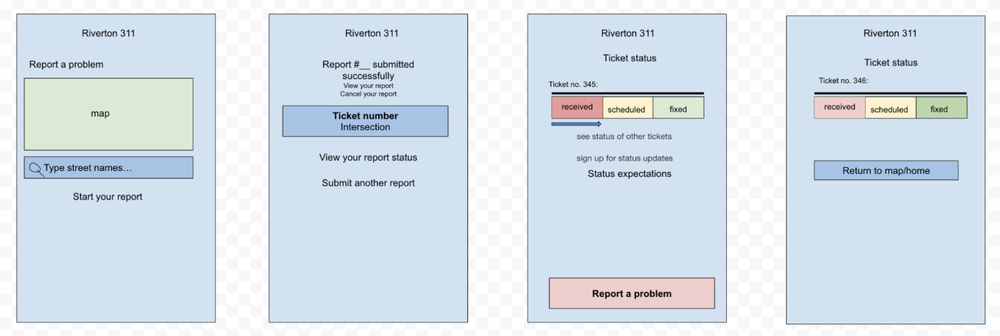
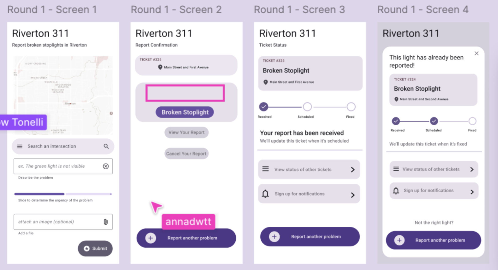
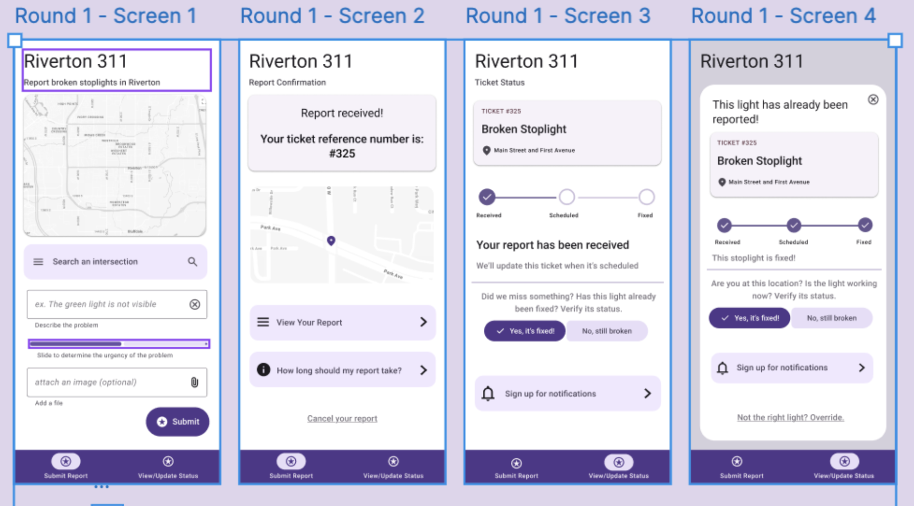
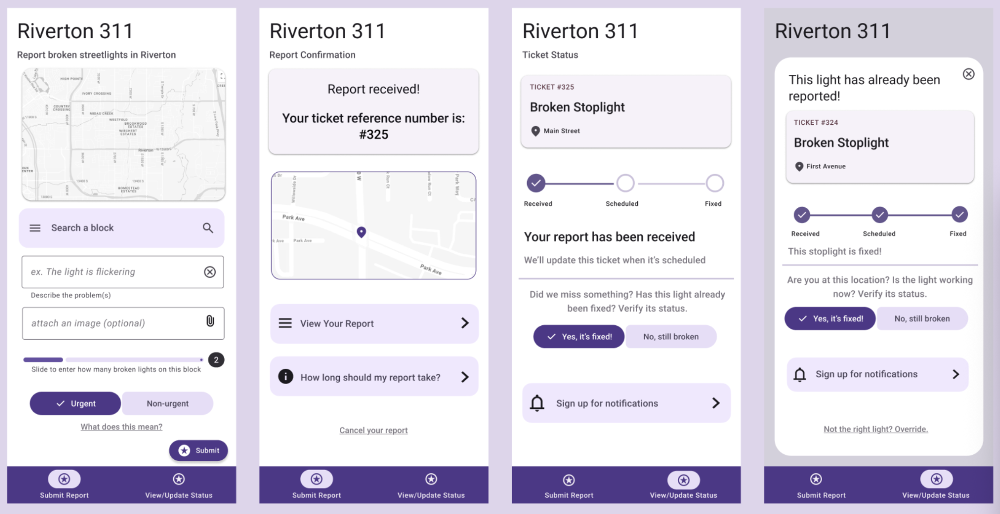

Week 5: Product Team Sprint
This week, we participated in a team sprint where we had to develop and iterate on four Figma frames according to an assigned scenario, while implementing peer feedback and change requests. We went through three rounds of designing, researching, and implementing feedback before presenting our products. My team chose to work on an app called Riverton 311, which allows users to report and track the status of broken streetlights. At the beginning of the project, we received information on what users wanted from the app, what each screen should display, and specific words that needed to be included in the final product.
Round 1
Before even opening Figma for our first round of designing, we worked to make a digital sketch of what we wanted our frames to look like. This allowed us to ideate about layout and structure before getting bogged down by the intricacies of working with the design kit on Figma.

Using our rough sketch as a template, we transferred our design into Figma, trying to maintain consistency with our design choices, such as colors, font sizes, and elements. Some things we knew we needed to improve going into round 2 were screen 2, as we felt like we had every necessary element, but it still looked very empty. We also had questions about screens 3 and 4 looking too similar, as they complete similar functions.

Round 2
After completing our first round of research, we went back to Figma to implement the feedback we had received. One major change we made was adding a navigation bar at the bottom, after seeing another 311 team that had used it to improve navigation within the app and from screen to screen. We realized that though our screens worked fine sequentially, we hadn’t fully thought through how the app would work as a whole, when needing to jump around through different parts. At this stage we were also given a change request: Residents can verify if lights have been fixed to close out tickets faster. This impacted the layout of screens 3 and 4 so we had to move around some elements in order to fit the change, but ultimately it did not derailleur design in a major way.

Round 3
We didn't change a lot from round 2 to round 3, our main focus was simply implementing the next change request: Add a screen that lets a resident indicate that more than one nearby light is affected. At first we just added another element asking for the number of broken lights, but struggled because this ended up making the page look crammed and a bit overwhelming. I think this wouldn’t have been an issue if we were developing a functioning app that could scroll, but since we just had a static screen, we were a bit more limited on space. We moved some elements around, and made things smaller to create more space, but this also encouraged us to rethink the elements we already had. We originally had a sliding scale to determine urgency, which we turned into the input for number of lights. We realized this worked better because the urgency can be very subjective, and there is a risk of community members inflating the urgency of reports to gain priority. We simplified this by providing just two options, urgent and non-urgent, and to ensure clarity with these terms, we provided a a clickable link that defines them. In our conversations, we had a very clear idea of urgent (fallen lights that maybe obstructing paths, safety hazards, broken lights that impede visibility at a busy intersection, etc) and non-urgent (a flickering light), but if that’s not clear to the users, then the buttons are not very effective.

Collaboration
I would say our team collaborated very well together. We originally had team roles that were supposed to switch each round be we found it better to all work together rather than delegating task leaders. I feel we all carried an equal amount of weight, and although we had each claimed one screen to design, once we started iterating, we were all working on improving each aspect of the product as a team. I think this approach helped there be consistency through the screens, and meant that more minds were assessing the quality of each aspect of our product. I think we also had a very good team dynamic in terms of everybody feeling comfortable sharing ideas, concerns, and suggestions about how to improve our work.